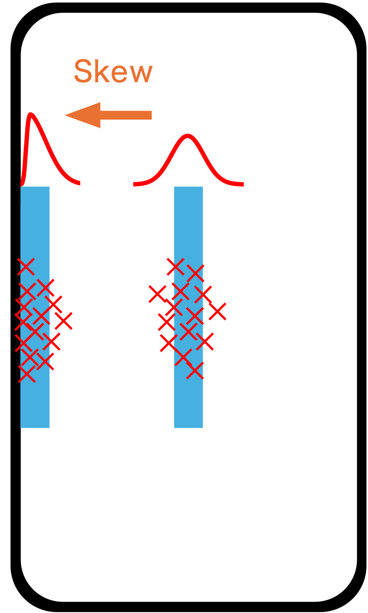
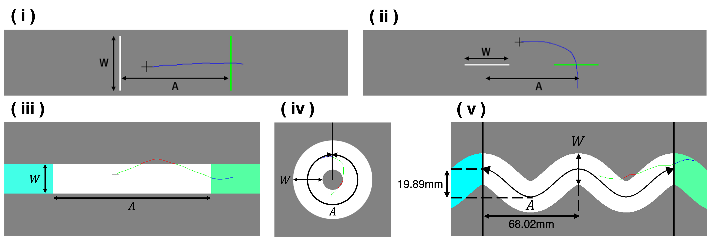
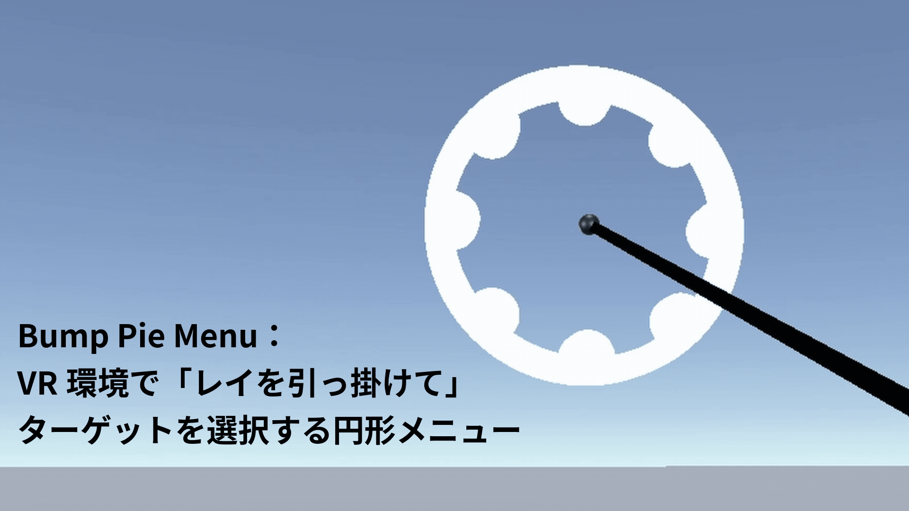
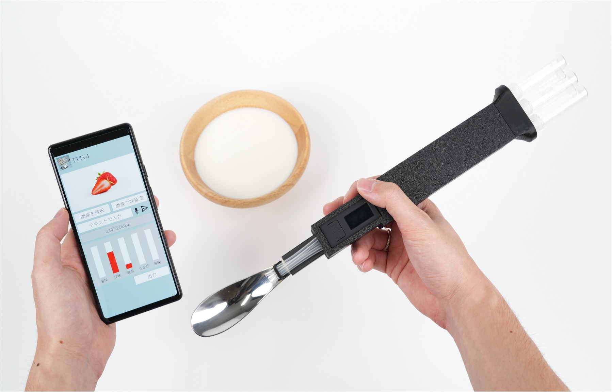
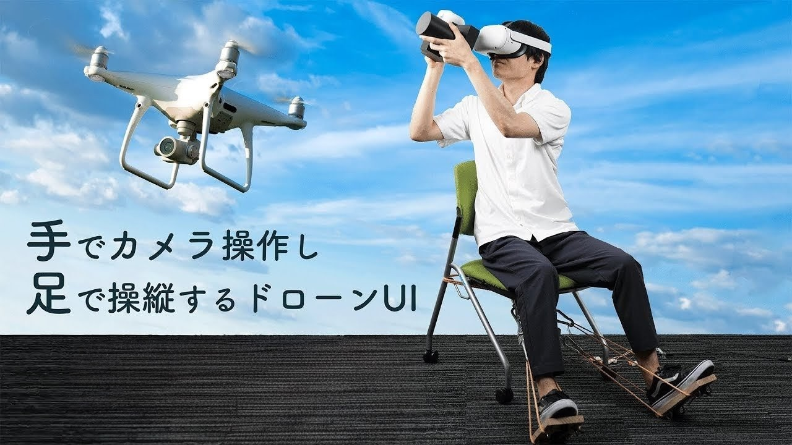

Performance Modeling
Fitts' LawやSteering Lawを用いたポインティング動作の操作時間予測モデル、およびDual Gaussian Distributionモデルを用いたポインティング成功率予測モデルに関する研究。
Fitts' LawやSteering Lawを用いたポインティング動作の操作時間予測モデル、およびDual Gaussian Distributionモデルを用いたポインティング成功率予測モデルに関する研究。
より直感的で使いやすいUI、より快適なUXを目指す。特に、画面端・画面角における高速かつ正確なポインティングに着目した研究。
仮想現実環境におけるユーザインターフェースの設計と評価に関する研究。
味覚ディスプレイの拡張として、カトラリー型味覚提示デバイスによる個人の好みやコンテクストに対応可能な味覚体験の拡張と実装に関する研究。

画面端・画面角付近におけるタッチポインティングの成功率を予測する数理モデルに関する研究。

ユーザの主観的な速度と精度のバイアスの影響を考慮したクロッシング・ステアリングの操作時間を予測する数理モデルに関する研究。

仮想現実環境でのレイを引っ掛ける操作によって、高速かつ正確な選択を実現する円形メニューUIに関する研究。

産地による味の違いの定量化や、パーソナル味覚提示デバイス、飲料の香りを再現する嗅覚提示デバイスに関する研究。

ドローン空撮におけるカメラ操作に重点を置いた「手でカメラ操作し足でドローン操縦する」UIに関する研究。